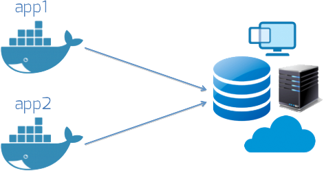
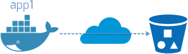

Dude, Where's My Data?
Persistence With Docker
just start another container!
ACCESS DENIED!
DATA DISAPPEARS!
Today's Nature
- stateless applications
- favors non-persistent data
- load-balancers, routing, & services
we all can't be
unicorns
persistence of yester-year
database lives on a outside machine
persistence based on object storage
docker data volumes
- a directory within one or more containers that bypasses the Union File System
- Initialized during container creation.
- Data volumes can be shared and reused among containers.
- Changes to a data volume are made directly.
- Changes to a data volume will not be included when you update an image.
- Data volumes persist even if the container itself is deleted.
block/nas host mounts
$ docker run -i -t -v nfs/host/mount/path:/container/folder/path busybox
== a management nightmare
see it in action!
$ docker run -ti -v myvol:/myvol busybox
/ # ls
bin dev etc home lib lib64 linuxrc media mnt myvol opt proc root run sbin sys tmp usr var
/ # cd myvol/
/myvol # touch newfile
/myvol # exit
$ cd /var/lib/docker/volumes/myvol/_data
$ ls
newfile
the *data only* container
FROM centos
VOLUME /var/lib/mysql
RUN yum -y install mysql-server
RUN touch /etc/sysconfig/network
EXPOSE 3306
$ docker build .
...
Successfully built b962491b87db
----------------------------------
FROM centos
VOLUME /var/lib/mysql
CMD ["true"]
$ docker build .
...
Successfully built 5f2bca5b686e
$ docker run --name data 5f2bca5b686e
the *data only* container
$ docker run -i -t --volumes-from data b962491b87db bash
bash-4.1# service mysqld start
bash-4.1# mysql -u root
mysql> connect test;
mysql> create table a(a int);
Query OK, 0 rows affected (0.01 sec)
exit
$ docker run -i -t --volumes-from data b962491b87db bash
bash-4.1# service mysqld start
bash-4.1# mysql -u root
mysql> connect test;
mysql> select * from a;
Empty set (0.00 sec)
http://www.alexecollins.com/docker-persistence/
Other Docker Data Volume Facts
- You can use the -v multiple times to mount multiple data volumes
- Docker defaults to a read-write volume but we can also mount a directory read-only.
- If a path already exists inside the container’s image, its contents will be replaced by the contents of on the host during mount.
- Docker will never automatically delete volumes when you remove a container.
Docker Volume Driver
- introduced in 1.7 Experimental
- merged into master in 1.8 #14659
- allows third-party container data management solutions to provide data volumes for containers which operate on data, such as databases, queues and key-value stores and other stateful applications that use the filesystem
what does this really mean?
Will The Real Slim Shady Please Stand Up?
(who's got volume drivers today?)

rexray
a volume plugin which is written in Go and provides advanced storage functionality for various platforms
rexray benefits
- functions with Docker 1.8 volume drivers
- can function as a standalone go binary
- drivers are built for:
- EC2 EBS Volumes
- OpenStack with Rackspace
- EMC's All Flash Array: XtremIO
- EMC's Software-Defined Scale-Out Storage Platform: ScaleIO
- can provision/delete, mount/unmount, snapshot and list volumes from the rexray CLI
so how does it work?
- get the rexray binary
- add a quick init file and add it to systemd
- set the `ENV` variables for the storage platform
- the reload the service
- ^^^ 1-4 will become apt/yum install
- rexray will perform a test to see the platform and what types of storage volumes are available to it via series of tests (ala introspection)
- create a new volume
- docker run...